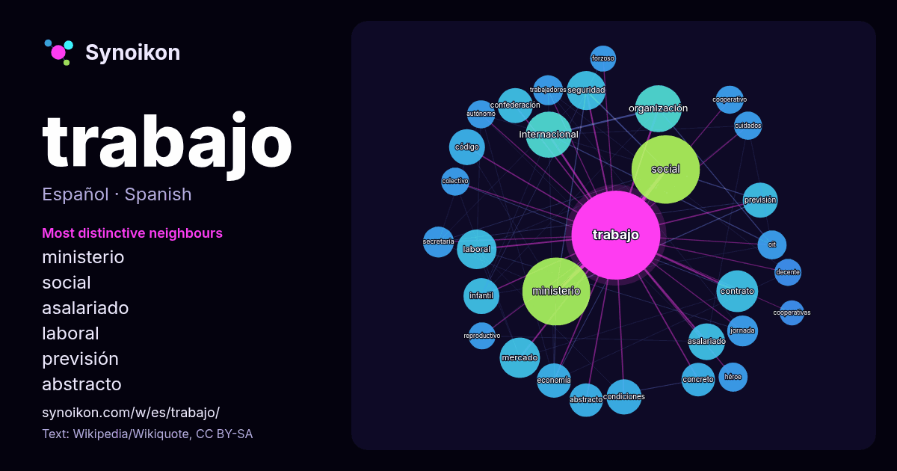

Español · palabra popular
trabajo
“work” · Las palabras encontradas a su alrededor en 1617 apariciones de Wikipedia, Wikiquote.

Vecinos más característicos
- ministerio 49×
- social 29×
- asalariado 25×
- laboral 24×
- previsión 22×
- abstracto 20×
- confederación 19×
- contrato 19×
- infantil 19×
- organización 19×
- concreto 18×
- código 17×
- oit 16×
- mercado 16×
- seguridad 16×
- jornada 15×
- secretaría 15×
- cooperativo 15×
- condiciones 14×
- autónomo 14×
× = cuántas veces más que en el texto general de Wikipedia.
Vecinos más frecuentes
- social 83
- ministerio 82
- partido 45
- organización 39
- internacional 38
- forma 34
- contrato 31
- mercado 29
- laboral 28
- seguridad 27
- derecho 25
- asalariado 24
- nacional 24
- persona 24
- código 23
- infantil 23
- término 23
- condiciones 22
- confederación 22
- hombre 22
En contexto
- esclavitud deja de ser la forma predominante del trabajo, para ser gradualmente reemplazada por el trabajo asalariado. Tras siglos de descenso en importancia Wikipedia snippets · Trabajo (sociología)
- un trabajo cuando hay un desplazamiento del centro de masas del cuerpo sobre el que se aplica la fuerza, en la dirección de dicha fuerza. El trabajo de Wikipedia snippets · Trabajo (física)
- desaparecer otras formas, el trabajo asalariado es la forma dominante. Actualmente aún coexisten el trabajo asalariado, el trabajo autónomo (profesiones liberales Wikipedia snippets · Trabajo (economía)
- trabajo, reducción de la jornada laboral, reducción de la semana laboral asimilable en ocasiones al reparto de trabajo o redistribución del trabajo, Wikipedia snippets · Reducción de la jornada de trabajo
- Trabajo en equipo es el trabajo hecho por un grupo de personas, donde todos tienen un objetivo en común. Para que se considere trabajo en equipo o cooperativo Wikipedia snippets · Trabajo en equipo
- 1966 a la categoría de "Secretaría de Trabajo de la Nación" dependiente del "Ministerio de Economía y Trabajo" por el presidente de facto Juan Carlos Wikipedia snippets · Secretaría de Trabajo (Argentina)
- El trabajo abstracto y concreto se refieren al carácter dual o bifacético del trabajo humano socialmente necesario contenido en las mercancías frente al Wikipedia snippets · Trabajo abstracto y trabajo concreto
- determinado por la cantidad de «tiempo de trabajo socialmente necesario» para su producción. La teoría del valor-trabajo es usualmente asociada a la economía Wikipedia snippets · Teoría del valor-trabajo
Más palabras
- agua
- arte
- bosque
- caballo
- camino
- campana
- canción
- ciencia
- ciudad
- clima
- comida
- corazón
- desierto
- dinero
- dios
- espejo
- estrella
- familia
- fuerza
- gato
- historia
- invierno
- isla
- jardín
- lengua
- lluvia
- madre
- mapa
- miel
- montaña
- muerte
- naturaleza
- oro
- otoño
- pan
- perro
- puente
- reloj
- sal
- salud
- silencio
- sombra
- tiempo
- tormenta
- tren
- té
- verano
- verdad
- vida
Precalculado el 2026-10-09 con los ajustes predeterminados (±5 palabras, corpus mediano). El mapa interactivo puede actualizarlo con datos en vivo.
Interfaz traducida automáticamente; se agradecen correcciones.